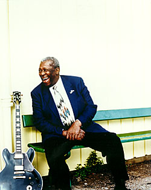

 "Я тут же приглашу выступать своих друзей, вроде Эрика Клэптона, или Джорджа Бенсона, и мы, вероятно, уже скоро разоримся,"- шутка Короля по поводу назначения его арт-менаджером дает богатую и разнообразную пищу для размышлений. |
19 июня на нью-йоркской Таймс- Сквеар открылся большой клуб (на 500 посетителей) под названием БиБиКинг. При клубе работает ресторан "Люсилль" - по имени его гитары. Формально Король блюза не является владельцем; клуб открывает акционерное общество, в котором первую скрипку играют владельцы международной сети известнейших джазовых клубов под названием "Blue Note". М-р Кинг вложился в дело своим именем и стал президентом клуба. На самом деле БиБиКинг - зиц-председатель;поскольку его расписание на 280 концертов в году физически не имеет возможности заниматься делами клуба. Первые четыре дня по открытию клуба БиБиКинг давал на его сцене по два концерта в день. Доктор Джон, Пол Роджерс и Кенни Уэйн Шеппард джемовали на открытии. Впечатляет и список именитых артистов, которые выступали здесь в последующие две недели: пионер и ветеран рок-н-ролла Литл Ричард, пионер белого блюз-рока Джонни Уинтер, ветеран чикагского блюза Отис Раш, соратник Пола Биттерфилда Элвин Бишоп, старинный друг БиБиКинга соул-блюзовый певец Бобби "Блю" Бланд, чикагский гитарист Эдди Клиауотер (выступавший на прошлогоднем московском Efes-фестивале), и группа Ливона Хелма, участника легендарной американской фолк-рок-блюз-группы "Зе Бэнд". |
Репортаж о выступлении Джонни Уинтера в новом клубе можно найти на музыкальной "Поляне".
Guitar.com предлагает он-лайновое интервью и короткий гитарный урок маэстро блюза БиБиКинга.